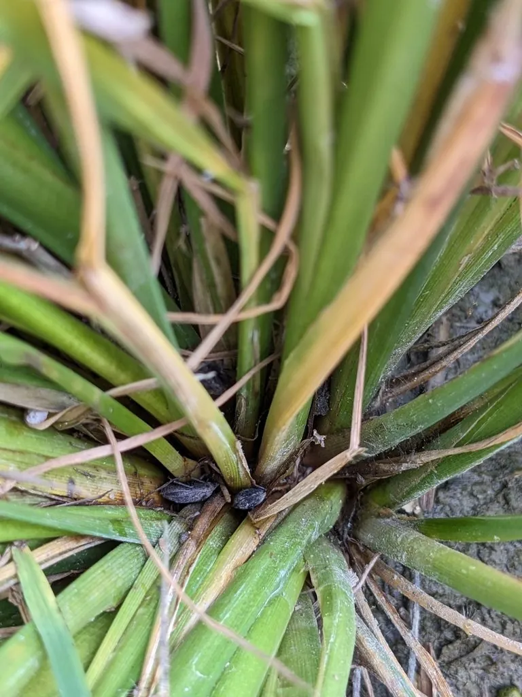

昆虫 · 动物界
稻盾蝽 Scotinophara lurida

体黑褐、形似小盾牌的蝽，成虫和若虫聚集在水稻茎基部吸食汁液，造成稻株枯黄，是水稻的重要害虫。
- 分类
- 门节肢动物门纲昆虫纲目半翅目科蝽科属稻盾蝽属
- 栖息环境
- 稻田及田边杂草丛，白天多潜伏在稻株茎基部
- 地理分布
- 中国南方稻区，以及日本、东南亚等地
- 保护级别
- 暂无评估
物种志
稻盾蝽成虫体长 8–10 mm，体色黑褐至灰黑，体背密布刻点，体形宽扁呈盾状，前胸背板两侧各有小突起。若虫体色较浅，腹部各节有黑斑，外形与成虫相似，只是翅未发育完全。
稻盾蝽分布于中国南方稻区以及日本和东南亚等地，是水稻上的重要害虫。它一年发生 1–2 代，以成虫在稻田附近的杂草、稻桩和土缝中越冬，翌年春季迁入稻田。成虫和若虫白天隐匿在稻株茎基部，早晚爬出刺吸汁液，受害稻株茎秆出现褐色斑点，严重时整丛枯黄，田间形成明显的枯死小片。成虫有趋光性，可用灯光诱集。防治上以清除田边杂草和稻桩、加强水肥管理为主，必要时在若虫盛期用药。
形态与习性
- 食性刺吸水稻茎基部和叶鞘汁液
- 体长成虫 8–10 mm
- 世代一年发生 1–2 代
- 越冬以成虫在杂草、稻桩和土缝中越冬
- 危害茎秆出现褐色斑点，严重时整丛枯黄
- 趋性成虫有趋光性，灯下可诱集
趣味知识
- 稻盾蝽白天藏在稻丛基部，早晚才爬到茎秆上取食。
- 受害稻田常出现一丛一丛的枯黄，稻农称之为“坐蔸”。
- 它的体形宽扁如盾牌，黑褐色的体背在稻桩上很难被发现。